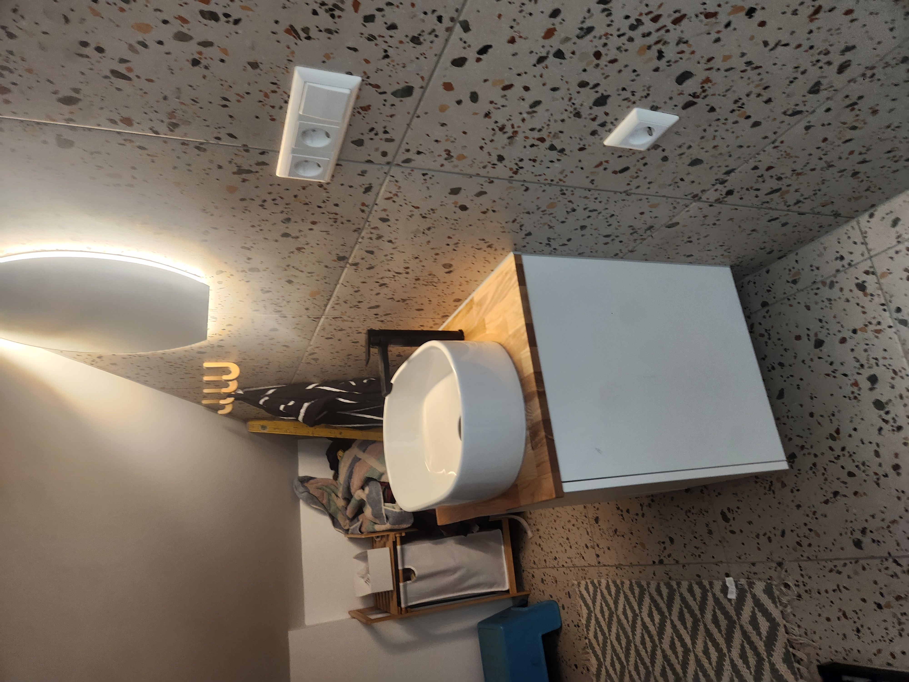
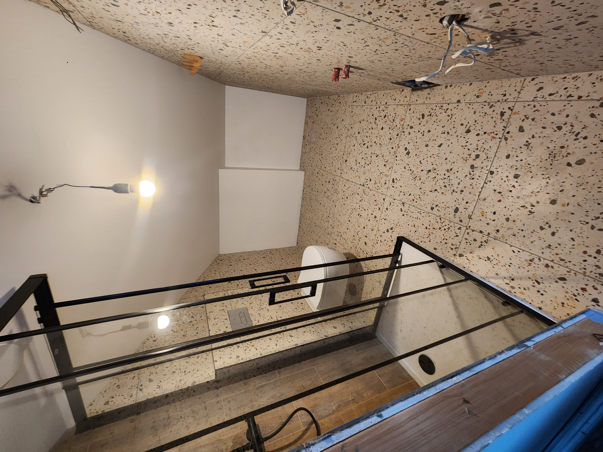
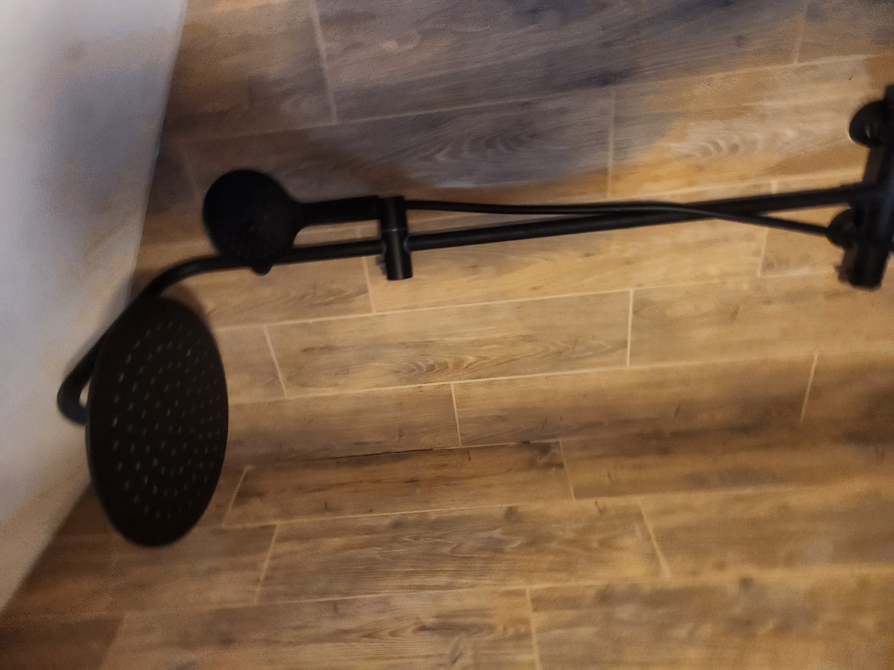

Vonios remontas
Hidroizoliacija, plytelės, santechnikos paruošimas, dušo zonos, baldų ir įrangos montavimas.
Vilnius • Lentvaris • Vilniaus rajonas
Atliekame praktiškus, tvarkingus remonto darbus: nuo griovimo ir paruošimo iki plytelių, apdailos ir galutinio sutvarkymo.
Pozicija
Leonamai.lt orientuojasi į žmones, kuriems reikia patikimo meistro ir aiškios remonto eigos. Padėsime įvertinti būklę, sudėlioti darbus pagal prioritetus ir rasti praktišką sprendimą pagal biudžetą.
Paslaugos
Hidroizoliacija, plytelės, santechnikos paruošimas, dušo zonos, baldų ir įrangos montavimas.
Sienų, grindų, lubų paruošimas, apdailos darbai, smulkūs konstrukciniai ir montavimo sprendimai.
Tikslūs mazgai, kampai, siūlės, nuolydžiai ir detalės, kurios lemia ar rezultatas laikys ilgai.
Jeigu dar nežinote nuo ko pradėti, padėsime susidėlioti darbų seką ir realistišką biudžetą.
Darbų pavyzdžiai




Pastaba: pirmai versijai naudojame tik atrinktą stipresnę medžiagą. Ateityje verta nufotografuoti daugiau švarių galutinių kadrų ir tikras prieš/po poras.
Procesas
Kontaktai
Atsiųskite nuotraukas, trumpą aprašymą ir vietą. Atsakysime, ką verta daryti pirmiausia ir kokios apimties darbų tikėtis.